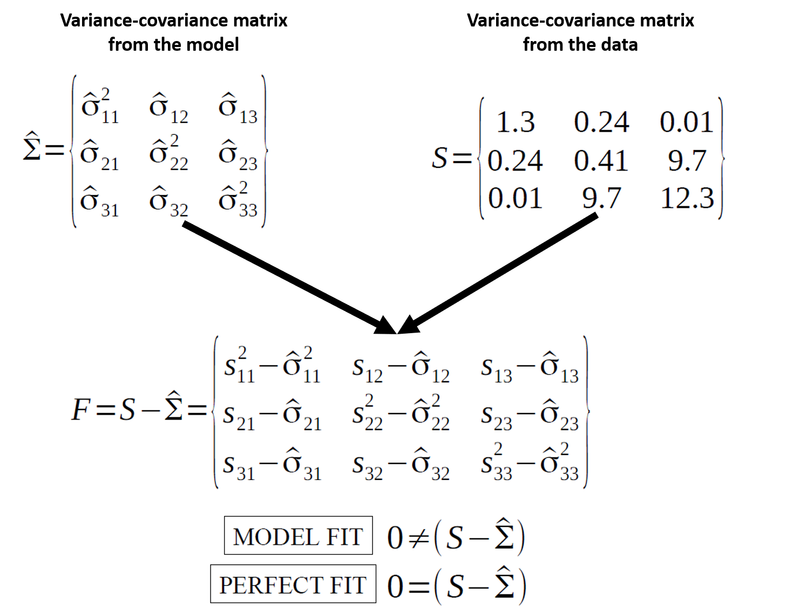
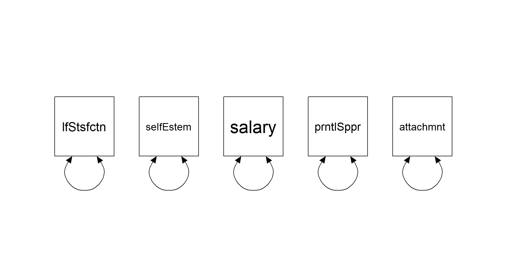
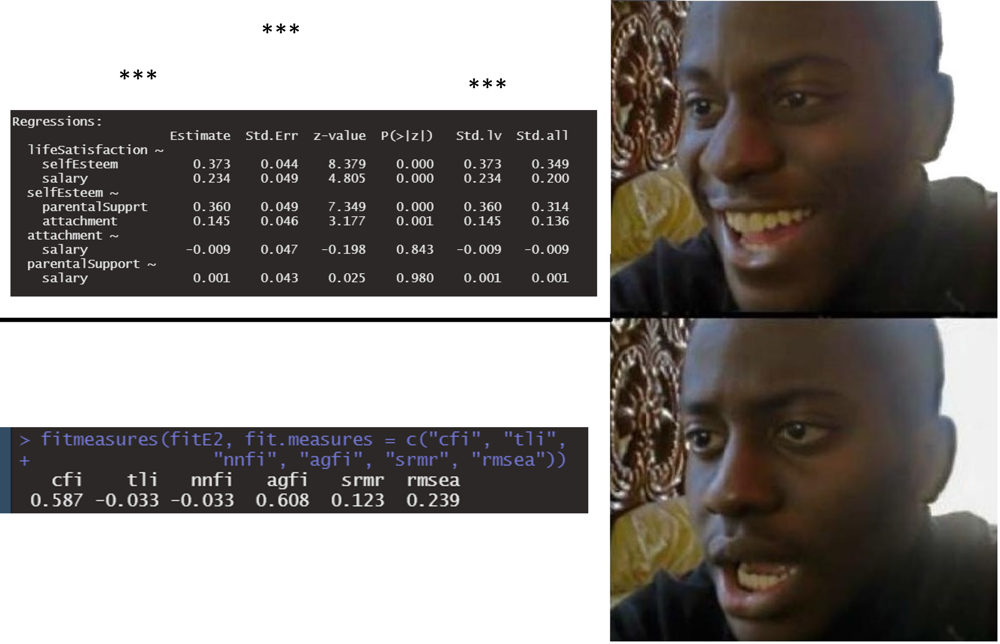

N <- 483
m_true <- "
lifeSatisfaction ~ .05*attachment + .25*selfEsteem + .40*parentalSupport + .30*salary
selfEsteem ~ .40*parentalSupport + .20*attachment
attachment ~~ .30*parentalSupport
"
m_fit <- "
lifeSatisfaction ~ selfEsteem + salary # omits some true predictors
selfEsteem ~ parentalSupport + attachment
# attachment ~~ parentalSupport # (omitted on purpose)
"
E2 <- simulateData(m_true, sample.nobs = N, seed = 12)
fit <- sem(m_fit, data = E2, meanstructure = TRUE)Model fit & diagnostics
Global fit, local misfit, and disciplined respecification
Today in the workflow
Specify → Identify → Estimate → Evaluate → Revise/Report
Learning objectives
By the end of this session you should be able to:
- State what “model fit” means: S vs Σ̂(θ) (exact vs approximate fit)
- Distinguish global fit from local misfit
- Compute and report core indices (χ², CFI/TLI, RMSEA + CI, SRMR) in lavaan
- Use residuals and modification indices (MI + EPC/SEPC) responsibly
- Follow a respecification protocol that avoids “fit hacking”
The object of interest
Model fit is about reproducing the observed covariance matrix.
\[ H_0:\ \hat{\Sigma}(\theta) = \Sigma \]

Fit is a property of a model + data + estimator
Fit indices are not “truth meters”.
They depend on:
- sample size \((N)\)
- model degrees of freedom \((df)\)
- estimator and distributional assumptions (ML, robust ML, WLSMV, …)
- model complexity (how constrained the model is)
- luck
Quick example dataset
We simulate data from a “true” structural model and then fit a simplified (misspecified) model to create misfit.
Warning
Fit indices will detect misfit only if the variable whose path is missing is included in the model
Fit indices
Families of fit indices
- χ²-based (exact-fit test)
- Comparative / incremental (CFI, TLI, NFI)
- Parsimony (RMSEA + CI; AIC/BIC)
- Residual-based / absolute (SRMR, RMR; and other “standalone” indices)
lavaan: core fit measures
fitMeasures(fit, c("npar", "chisq", "df", "pvalue",
"cfi", "tli",
"rmsea", "rmsea.ci.lower", "rmsea.ci.upper",
"srmr"))χ² test: what it is (and why it annoys people)
Under ML, the likelihood ratio test yields:
\[ \chi^2 = (N-1)\,F_{\mathrm{ML}} \]
with \((df = \frac{p(p+1)}{2} - t)\) (non-redundant moments minus free parameters).
Why it rejects so often:
- with large \((N)\), tiny misspecifications become detectable
- real data rarely satisfy “exact fit” assumptions
χ² assumptions (classical ML)
The textbook χ² calibration relies on:
- independent observations
- correct model form
- multivariate normality for endogenous observed variables (in ML)
- sufficiently large \((N)\)
…and it is sensitive to:
- non-normality
- missing data handling
- clustering (design effects)
(Robust corrections and missing-data strategies come in deck 06.)
Comparative indices (CFI/TLI): baseline model logic
Comparative indices evaluate improvement over a baseline (independence) model.
Baseline idea: each variable has its own variance; covariances are fixed to 0.
bm <- "
lifeSatisfaction ~~ lifeSatisfaction
selfEsteem ~~ selfEsteem
salary ~~ salary
parentalSupport ~~ parentalSupport
attachment ~~ attachment
"
fit_bm <- sem(bm, data = E2,
meanstructure = TRUE)
chisq df cfi
277 10 0 CFI formula (and why df matters)
User model is evaluated relative to baseline.
chisq df cfi
62.984 3.000 0.725 \[ \mathrm{CFI}=\frac{\delta(\text{Baseline})-\delta(\text{User})}{\delta(\text{Baseline})-\delta(\text{Saturated})} \qquad \text{with}\ \delta=\chi^2-df,\ \delta(\text{Saturated})=0 \]
Implication: \(CFI\)/\(TLI\) are functions of both misfit and \(df\).
Two models can have the same χ² but different CFI if their \(df\) differ.
fitMeasures(fit, c("cfi", "tli", "nnfi"))Parsimony & approximate fit: RMSEA
RMSEA targets approximate (not exact) fit.
A common ML form:
\[ \mathrm{RMSEA}=\sqrt{\max\left(\frac{\chi^2-df}{df(N-1)},0\right)} \]
- prefers parsimony: penalizes low \((df)\) models less forgivingly
- always report the confidence interval
fitMeasures(fit, c("rmsea", "rmsea.ci.lower", "rmsea.ci.upper"))Residual-based fit: SRMR
SRMR summarizes the average standardized residual:
- compare observed correlations vs model-implied correlations
- less sensitive to \((N)\) than χ², but sensitive to model structure
fitMeasures(fit, c("srmr", "rmr"))What to report (minimum set)
In manuscripts, prefer a consistent minimal bundle:
- estimator + missing data strategy
- χ², \(df\), \(p\)
- \(CFI\) and \(TLI\)
- \(RMSEA\) with 90% \(CI\) (and \(SRMR\))
- local diagnostics summary (what you checked, what you changed, and why)
Local fit
Global vs local fit
- Global fit: one-number summaries of overall mismatch (χ², CFI/TLI, RMSEA, SRMR)
- Local fit: where the mismatch lives
- residual covariance/correlation matrices
- standardized residuals
- MI + EPC/SEPC
Residuals: “where does the model fail?”
lavaan can return observed, implied, and residual covariances.
res <- lavResiduals(fit, type = "raw")
names(res)[1] "type" "cov" "mean" "cov.z" "mean.z" "summary"res$cov # residual covariance lfStsf slfEst salary prntlS attchm
lifeSatisfaction 0.007
selfEsteem 0.009 0.000
salary 0.015 0.039 0.000
parentalSupport 0.322 0.000 0.000 0.000
attachment 0.110 0.000 0.000 0.000 0.000In practice you inspect:
- largest residual covariances/correlations
- patterns (blocks, specific pairs, method effects)
Standardized residuals (local z-scores)
Standardized residuals scale residuals by their sampling variability.
res_std <- residuals(fit, type = "cor")
res_std$cov # standardized residual covariances lfStsf slfEst salary prntlS attchm
lifeSatisfaction 0.000
selfEsteem 0.006 0.000
salary 0.012 0.037 0.000
parentalSupport 0.296 0.000 0.000 0.000
attachment 0.094 0.000 0.000 0.000 0.000Heuristic: large absolute standardized residuals flag local misfit.
(We avoid “magic cutoffs”; interpret in context + patterns, but remember, you expect each of them to be \(zero\).)
Step 5: model modification (the dangerous/magic step)
The goal is not “better numbers”.
The goal is:
- a model that is more plausible given theory and diagnostics
- changes that are transparent and ideally replicable
Modification indices
MI approximates how much χ² would decrease if a fixed parameter were freed.
- MI is a score test (local improvement)
- it does not tell you the direction/magnitude of the new parameter
So you inspect MI together with EPC (expected parameter change).
mi <- modificationIndices(fit, sort. = TRUE)
head(mi[, c("lhs","op","rhs","mi","epc","sepc.all")], 10) lhs op rhs mi epc sepc.all
19 lifeSatisfaction ~ parentalSupport 58.234 0.416 0.339
18 lifeSatisfaction ~~ selfEsteem 52.562 -0.941 -0.880
27 parentalSupport ~ lifeSatisfaction 45.077 0.256 0.314
21 selfEsteem ~ lifeSatisfaction 33.931 -0.587 -0.620
20 lifeSatisfaction ~ attachment 5.473 0.114 0.100
22 selfEsteem ~ salary 0.752 0.041 0.037
32 attachment ~ selfEsteem 0.556 2.784 3.020
28 parentalSupport ~ selfEsteem 0.555 -6.106 -7.100
24 salary ~ selfEsteem 0.552 0.028 0.031
23 salary ~ lifeSatisfaction 0.524 0.073 0.086EPC vs SEPC (why you want both)
- EPC: expected unstandardized change (units matter)
- SEPC: expected standardized change (comparability)
If an MI is huge but EPC is tiny, the “improvement” may be statistically detectable but substantively trivial (especially with large \(N\)).
A disciplined respecification protocol
- Check admissibility
convergence, Heywood cases (negative variances), huge SE, non-identified warnings - Inspect local misfit
residuals → standardized residuals → MI/EPC - Apply theory filter
is the modification plausible and consistent with your construct/design? How can I justify it? What are the consequences on my theory/model? - Change one thing at a time
refit, re-check, document - Validate
holdout sample / replication / preregistration (when feasible)
Pitfall callout: “models that fit” are not necessarily true
Remember that just because your model fits the data, you cannot conclude that your model is correct nor that the data generating process follows your hypothesized paths.
- opposite arrows can imply the same covariance structure (equivalence)
- post-hoc modifications capitalize on chance
- measurement error in observed variables contaminates estimates
As usual all models are false, but some are useful.
Oh NO, my p values!

Exercises (Lab 03)
Go to:
labs/lab03_fit-diagnostics_MI_residuals.qmdlink
You’ll practice:
- Extracting and reporting fit indices
- Inspecting residual matrices (raw + standardized)
- Using MI + EPC/SEPC to propose theory-justified modifications
- Documenting a respecification path transparently
Take-home: 3 things
- Fit indices quantify mismatch between S and Σ̂(θ); they are not “truth”
- Always pair global fit with local diagnostics (residuals + MI/EPC)
- Respecification is a scientific decision: theory + transparency + validation
Optional: beyond fixed cutoffs
Rules like “CFI > .95” or “RMSEA < .06” can be misleading because fit indices depend on:
- model structure (df, factor loadings, cross-loadings, residual correlations)
- distributional features (non-normality, ordinal data)
- estimation method and sample size
Extra (later / self-study): dynamic fit indices & simulation-informed expectations
- Groskurth et al. (2024) — fit cutoffs depend on analysis characteristics
- McNeish & Wolf (2023) — pushing against universal cutoffs
- Dynamic fit index app for exploring scenario-dependent thresholds
Acknowledgments
Thanks to Massimiliano Pastore for his slides!
References
Groskurth, K., Bluemke, M., & Lechner, C. M. (2024). Why we need to abandon fixed cutoffs for goodness-of-fit indices: An extensive simulation and possible solutions. Behavior Research Methods, 56(4), 3891–3914. https://doi.org/10.3758/s13428-023-02193-3
McNeish, D., & Wolf, M. G. (2023). Dynamic fit index cutoffs for confirmatory factor analysis models. Psychological Methods, 28(1), 61–88. https://doi.org/10.1037/met0000425